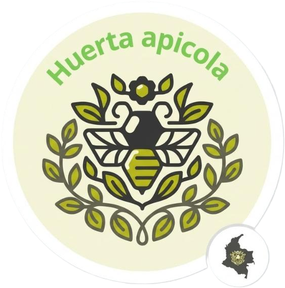

"¡Una experiencia absolutamente mágica! Al principio me daban pánico las abejas, pero Don José nos dio tanta confianza que terminé con una abeja en el guante admirándola. Y la miel fresca... inigualable."
Senderismo Apícola · Bogotá
BeeTourismDescubre lo que sienten y opinan nuestros visitantes al entrar en contacto directo con las abejas en el corazón de Tibasosa, Boyacá.
Opciones diseñadas tanto para quienes nos visitan por primera vez como para familias y entusiastas de la apicultura.
Recorrido guiado por el apiario y los senderos cercanos. Observamos las colmenas desde distancia segura y aprendemos sobre el comportamiento de las abejas.
Compara color, aroma y sabor de mieles uniflorales de distintas flores con un guía experto. Una experiencia sensorial única para toda la familia.
Aprende a construir con tierra, guadua y materiales locales. Descubre cómo se integran las construcciones ecológicas al entorno del apiario boyacense.
Historias reales de personas que vivieron la experiencia apícola en nuestro apiario de Tibasosa.
"¡Una experiencia absolutamente mágica! Al principio me daban pánico las abejas, pero Don José nos dio tanta confianza que terminé con una abeja en el guante admirándola. Y la miel fresca... inigualable."
Senderismo Apícola · Bogotá
"Fuimos con nuestros dos hijos de 9 y 12 años y quedaron fascinados. Aprendieron más de biología en 3 horas aquí que en todo el año escolar. Muy seguro y recomendadísimo para familias."
Apicultor por un Día · Tunja
"La cata de mieles fue una sorpresa total. Jamás imaginé que la miel de eucalipto pudiera tener un sabor tan mentolado y diferente. El paisaje de Tibasosa es espectacular."
Degustación de Mieles · Medellín
"Un plan de fin de semana diferente, educativo y en paz con la naturaleza. La atención del equipo de BeeTourism es cálida y muy profesional. Volveremos sin duda alguna."
Senderismo Apícola · Bucaramanga
"Hicimos el taller de bioconstrucción y visitamos las colmenas. Entender el trabajo en equipo de las abejas nos inspiró a todos. Una verdadera lección de vida para los jóvenes."
Taller Bioconstrucción · Duitama
"Compré propóleo y miel multifloral después del recorrido y la calidad es pura, 100% real. Se nota el amor y respeto con el que cuidan a sus abejas en Tibasosa."
Experiencia Integral · Sogamoso